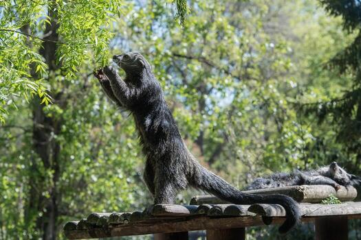

Conservation

Binturongs face pressure from habitat loss, hunting, and wildlife trade. Protecting the forests they depend on is one of the most important parts of protecting the species.
Conservation status
The binturong is listed as Vulnerable on the IUCN Red List. This means the species faces a high risk of decline in the wild if major threats continue.
Main threats
- Habitat loss: Deforestation removes the trees binturongs use for food, shelter, and movement.
- Hunting: Binturongs are hunted in parts of their range for meat and other uses.
- Wildlife trade: Some animals are captured for the pet trade or other forms of wildlife commerce.
Why forest protection matters
Binturongs depend on healthy forests, especially areas with connected tree cover. Protecting habitat also benefits many other species that share the same ecosystems.